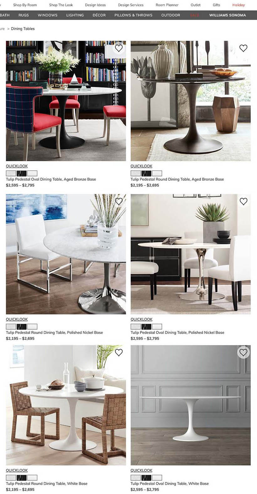
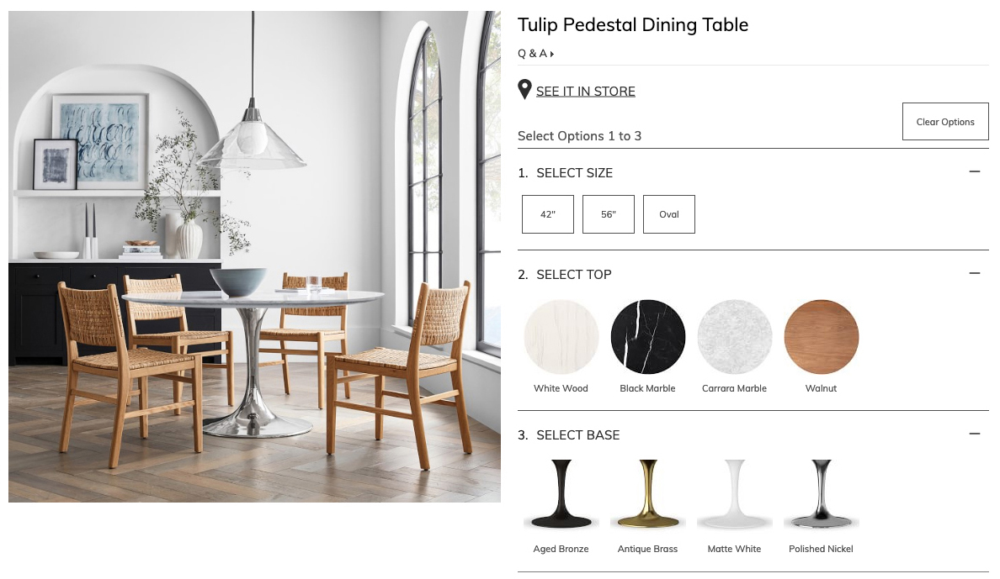
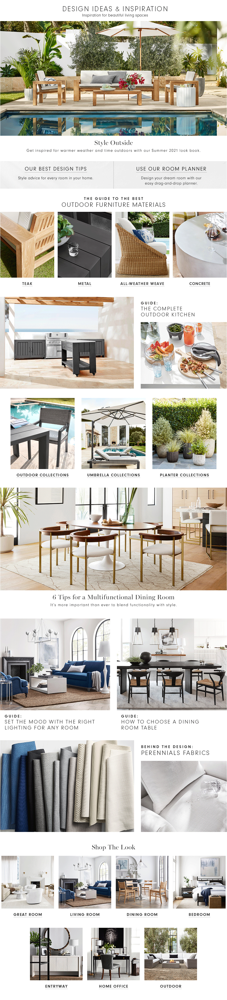
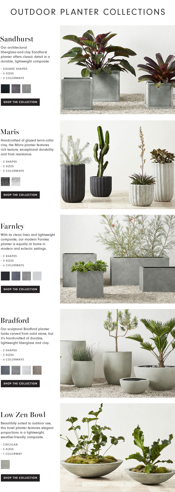
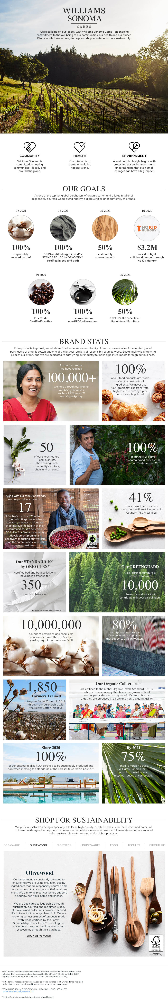
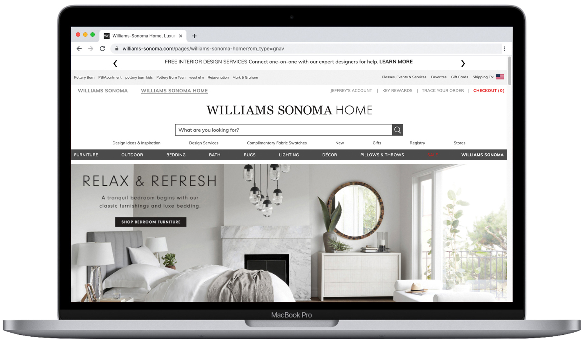
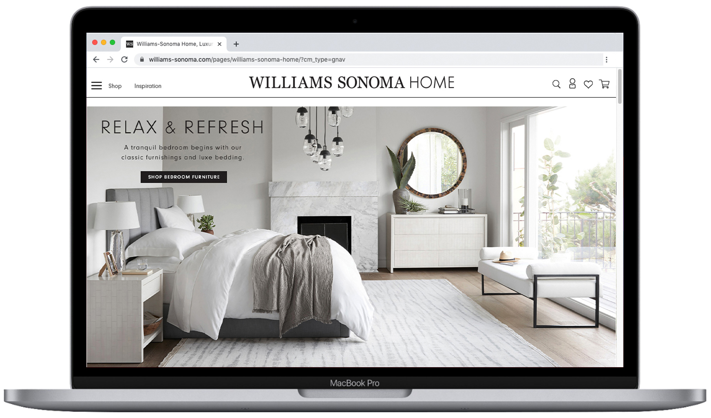

A selection of redesign projects completed while working at Williams Sonoma Home, spanning e-commerce UX, seasonal landing pages, and site-wide navigation.
The original design split the Saarinen Table product range across eight separate pages — one for each combination of base material and top shape. This meant customers had to navigate multiple pages to understand the full range of options, creating a clunky and confusing shopping path.

All product attributes were consolidated onto a single page. Size and shape attributes were grouped together, with top and bottom material options positioned below — allowing customers to clearly see every available configuration without leaving the page.

The design accommodated seasonal content changes where certain elements would shift while maintaining the overall structure. A modular component approach allowed sections to be removed, replaced, or rearranged without requiring a full page redesign multiple times a year.

Multiple collection pages were needed to house products spanning different categories while preserving visual consistency. The design emphasised large product imagery alongside concise bullet points describing each collection.

A content-dense page requiring substantial information to be presented in an engaging and easily digestible format across both desktop and mobile.

The existing header and navigation contained too much content, pushing nearly half of the hero section below the fold on load. This reduced the immediate visual impact of the homepage photography and obscured key product information on product pages.

The header was reorganised and redesigned to deliver a cleaner, more elevated feel — removing visual noise and consolidating navigation into a hamburger menu. The result was significantly more hero visibility on the homepage and clearer product information on product pages.

The expanded navigation states were carefully designed to surface sub-categories clearly. Each level of the hierarchy was considered to ensure customers could orient themselves and reach product categories in fewer steps.